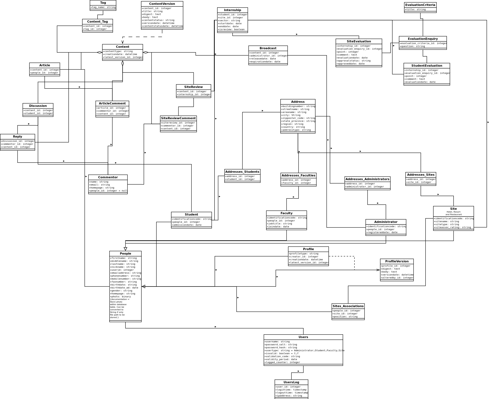
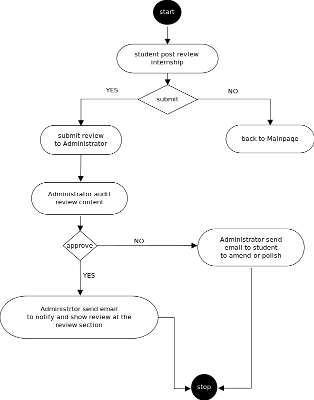
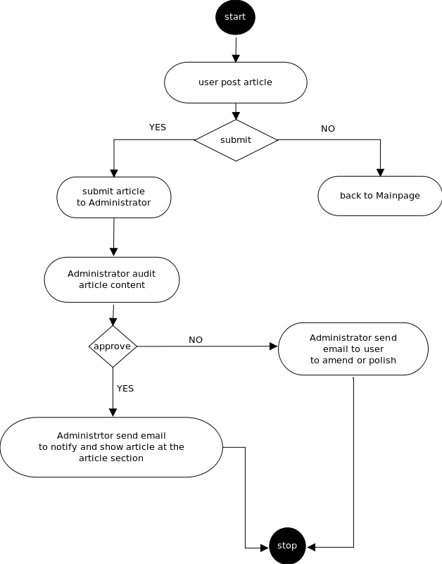
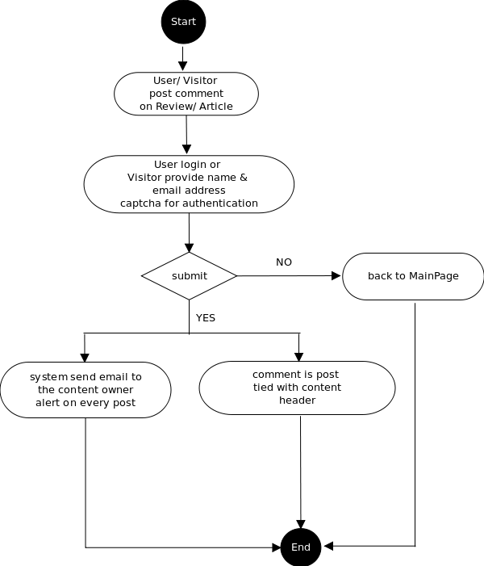
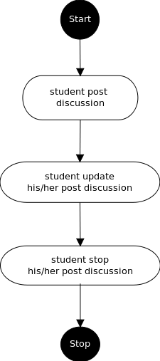
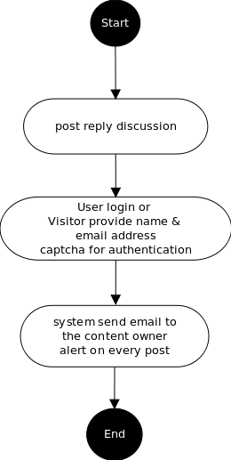
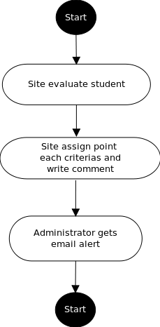
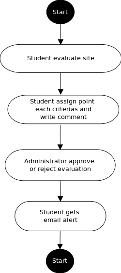
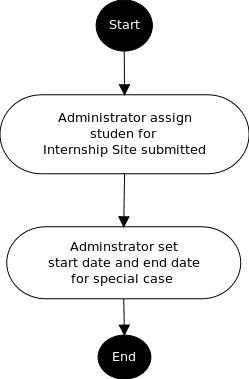

| Exercise1: Data Model |
| click to enlarge image, double click back to thumbnail |
| |
|  |
| Exercise2: Content Workflow |
| Content status |
| unknown |
| submit |
| auditing |
| audit |
| amending |
| amend |
| polishing |
| polish |
| finalizing |
| final |
| approving |
| approve |
| rejecting |
| reject |
| expiring |
| expire |
| |
| minimum internship period |
| 3 months |
| |
| Post Review |
|  |
- Joe Student can post review of his internship site.
- Joe Student 'submit' his internship site review to Jane Administrator.
- Jane Administrator 'audit' Joe Student review. Jane Administrator can request Joe Student to 'amend' or 'polish' his review and re-submit it.
- Joe Student gets an email alert asking him to amend or polish his review and 'submit' or 'final' it.
- Jane Administrator can 'approve' the review.
- Joe Student gets an email alert showing his latest review status.
- The review on Internship site by Joe Student shows up in the front page under 'Review' section.
|
| Post Article |
|  |
- Joe User can post article on topic related/unreleated to internship.
- Joe User 'submit' his article to Jane Administrator.
- Jane Administrator 'audit' Joe User article. Jane Administrator can request Joe User to 'amend' or 'polish' his article and re-submit it.
- Joe User gets an email alert asking him to amend or polish his article and 'submit' or 'final' it.
- Jane Administrator can 'approve' the article.
- Joe User gets an email alert showing his latest article status.
- The article by Joe User shows up in the front page under 'Article' section.
|
| Post Comment |
|  |
- Jimmy can post comment on review/article posted by Joe User.
- Jimmy as Jimmy User can log in or Jimmy as Jimmy Visitor can provide name and email address, 'captcha' for authentication.
- The comment will be tied up with specific review/article and show along side of it.
- Joe User gets an email alert on every post.
- Jane Administrator can alter/remove the comment and can black-listed the email address.
|
| Post Discussion |
|  |
- Joe Student can post discussion on discussion forum.
- Joe Student can update his posted discussion.
- Joe Student can stop his posted discussion.
|
| Post Reply |
|  |
- Jimmy can post reply to discussion.
- Jimmy as Jimmy User can log in or Jimmy as Jimmy Visitor can provide name and email address, 'captcha' for authentication.
- Joe Student gets an email alert on every post.
|
| Site Evaluation |
|  |
- Alice InternManager from Siam Hotel Site can evaluate Joe Student.
- Alice InternManager can assign points 0..5 per evaluation enquiry and write comment necessary. Each evaluation enquiry have criteria.
- Administrator gets an email alerting from site evaluation.
|
| Student Evaluation |
|  |
- Joe Student can evaluate his internship site Siam Hotel Site only when he complete 'minimum internship period' on Siam Hotel Site.
- Joe Student can assign points 0..5 per evaluation enquiry and write comment necessary. Each evaluation enquiry have criteria.
- Jane Administration can 'approve' or 'reject' the evaluation.
- Joe Student gets an email alert.
|
| Student Internship |
|  |
- Jane Administrator can assign Joe Student to Siam Hotel Site for internship.
- Jane Administrator can set start date of Internship and end date of Internship.
|
| Exercise3: Version Control |
| Write down your answers to the following questions: |
| Q1: What is your system for versioning content? |
|
|
| Q2: What is your system for versioning the software behind your application, including data model and page scripts? |
| We use Subversion for versioning our software along with data models and page scripts. |
|
| Q3: What kind of answer can your system produce to the question "Who is responsible for the content on this current user-visible page?" |
| Each tables related to content for our software have reference to people via. people_id, student_id, site_id or administrator_id along creation date, altered date, version date whenever necessary. Therefore, few database queries via system can answer the above mentioned queries. |
|
| |
| Note that generally most teams must write some additional SQL code to complete this exercise, augmenting the data model that they built in Exercise 1. |
| |
| Exercise4: Skeletal Implementation |
| Build enough of the pages so that a group of users can cooperate to put a few pieces of content live on your server. Focus your efforts on the primary kinds of publisher-authored content that you expect to have in your online learning community. For most projects, this will be articles and navigation pages to those articles. |
| After you've got a few articles in, step back and ask the following questions: |
| Q1: Is this data model working? Yes |
| Q2: Is it taking a reasonable number of clicks to get some content live? Yes |
| Q3: Do the people who need to approve new content have an easy way of figuring out what needs approval and what has been approved or rejected already? Must those editors come to the site every few hours and check or will they get email alerts when new content needs review? Yes, the adminstrator will send email to them notify about their contents. |
| |
| A skeletal implementation should have stable and consistent URLs, i.e., the home page should be just the hostname of the server and filenames should be consistent. If you haven't had a chance to make abstract URLs work (see the "Basics" chapter), this is a good time to do it. Every page should have a descriptive title so that the browser's Back button and bookmarks ("favorites") are fully functional. Every page should have a "View Source" link at the bottom and a way to contact the persons responsible for page function and content. Some sort of consistent navigation system should be in place (also see below). The look and feel of a skeletal implementation will be plain, but it need not be ugly or inconsistent. Look to Google for inspiration, not the personal home pages of fellow students at your university. |
| |